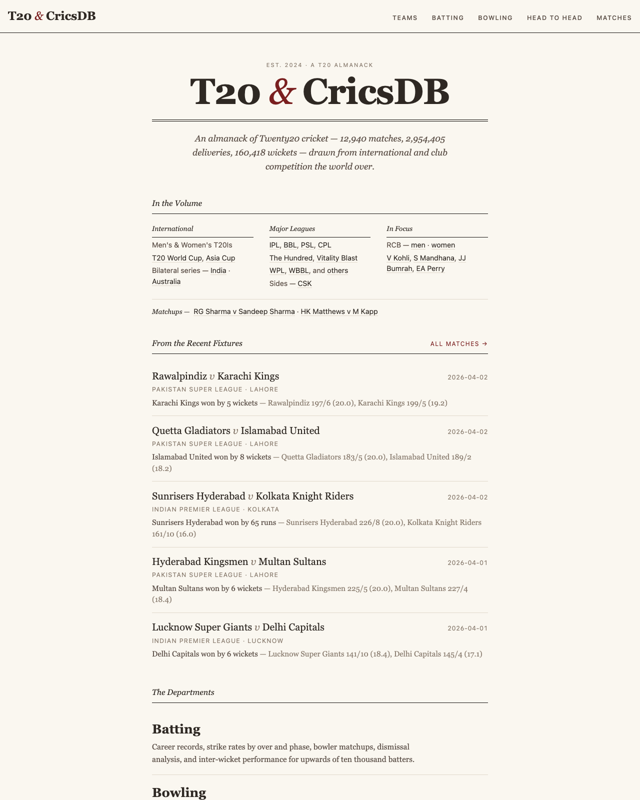
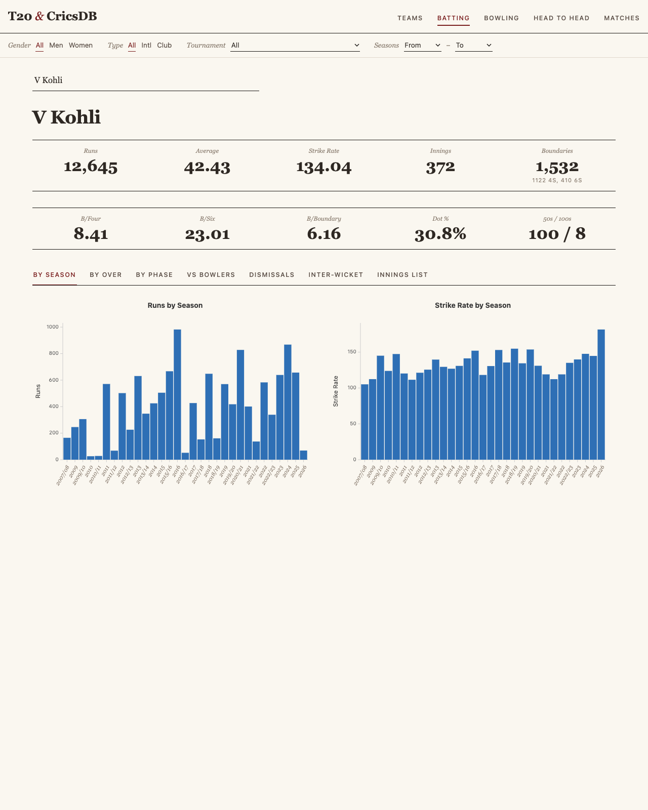
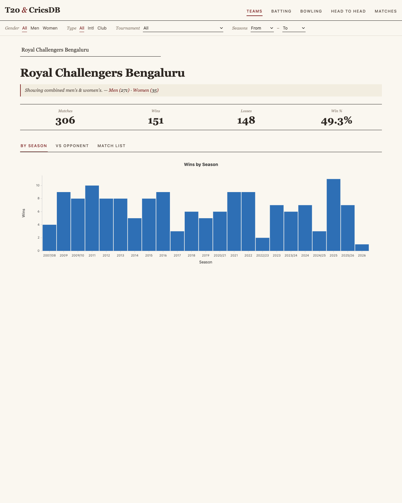
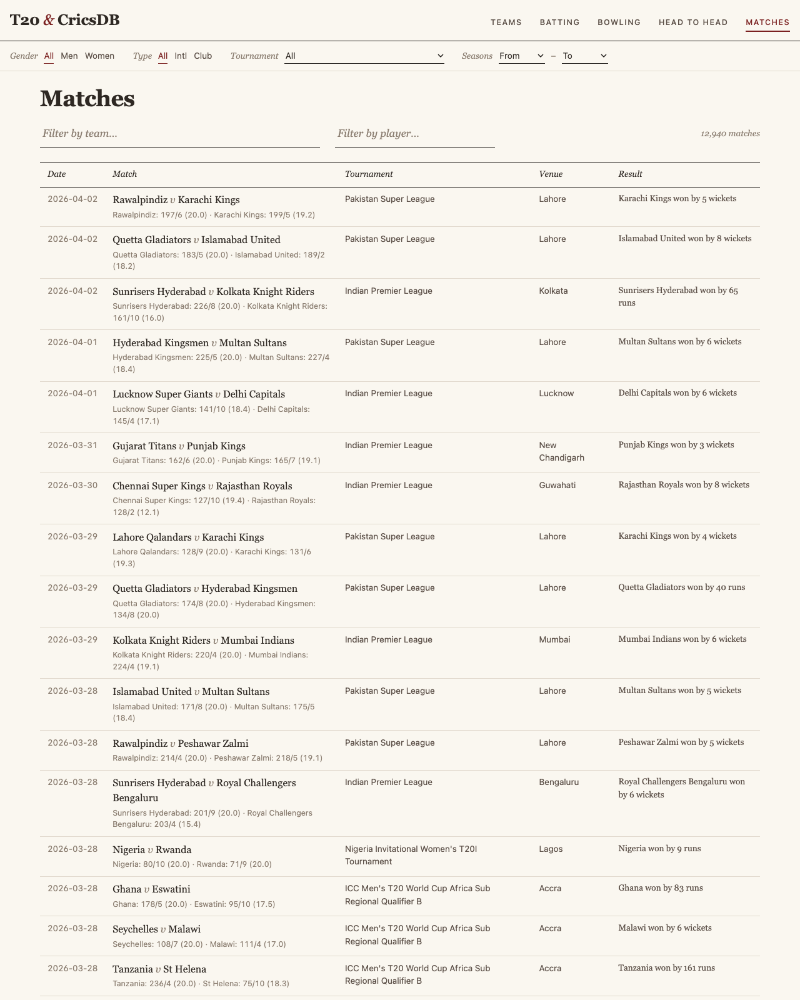

CricsDB — A T20 Cricket Analytics Platform
12,940 matches, 2.95M deliveries, every ball searchable.
CricsDB is a T20 cricket analytics platform I built around the wonderful open data from cricsheet.org. It covers 12,940 matches across international cricket and 18 club leagues, 2.95 million ball-by-ball deliveries, and 160K wickets — all queryable via a React frontend with deep-linkable URLs.
Live at https://t20.rahuldave.com/. Source on GitHub.

What you can do with it
- Browse teams with split men’s/women’s stats, head-to-head records, and per-season trajectories.
- Drill into batters and bowlers — by innings, by over, by phase (powerplay / middle / death), by season, by opponent, with dismissal breakdowns.
- Look up any head-to-head matchup between a batter and a bowler across the entire dataset.
- Browse matches and open a scorecard with worm chart, Manhattan chart, and a per-delivery innings grid that colors every ball by outcome.



The stack
- Database — SQLite (435 MB, WAL mode) accessed through deebase, a small async ORM I’d been working on.
- Backend — FastAPI, async, raw parameterised SQL via
db.q(sql, params). The bind-parameter support was a small PR back to deebase. - Frontend — React 19 + TypeScript + Tailwind v4, charts in Semiotic v3, build via Vite 8.
- Deploy — pla.sh, single-command deploys with the database persisted on the host between code-only pushes.
Design notes
A handful of small decisions ended up shaping the whole project.
Over numbering: 0-indexed in the DB, 1-indexed in the API. Cricsheet stores overs as 0–19, so the database stays faithful to the source. The API adds 1 before returning, so consumers see 1–20 everywhere. The mental cost is one +1 in each router; the win is that joins against cricsheet always line up.
Legal balls vs all deliveries. Batting strike rate counts only legal balls (no wides, no no-balls). Bowling runs-conceded counts all deliveries because the bowler is charged for the extras. Mixing these two up is the single most common bug in amateur cricket dashboards; isolating them in two separate SQL paths kept the rest of the codebase honest.
URL is the source of truth. Every page’s filter, tab, and selected player lives in ?search=params. A custom useSetUrlParams() hook does atomic multi-param updates so the back button always lands somewhere sensible and any view is a copy-pasteable link.
Wisden-almanack visual identity. The first cut was generic Tailwind — blue/grey, Inter, default shadows. Functional, forgettable. The redesign pass swapped in a cream page (#FAF7F0), warm dark-brown ink, oxblood as the only accent, and Fraunces for display type. No card chrome — hierarchy comes from rules, whitespace, and typography. Two files in the entire frontend contain raw color literals; everything else references named tokens.
Things I learned
- Semiotic v3 is a lovely chart library but the high-level
Scatterplothelper doesn’t expose per-point click handlers — to wire scatter↔︎table linking in both directions you have to drop down toXYFramedirectly. - Identity ambiguity is the hardest problem in a sports database. ~110 team names appear in both men’s and women’s matches in cricsheet (every international side, every IPL/WPL franchise pair…). A team page with no gender filter aggregating both squads is statistically meaningless. The fix is contextual: when a tournament filter is set, auto-fill the gender; when it isn’t, show a banner.
- Double-encoded JSON snuck into one column (
wicket.fielders) because both my import script and deebase’s JSON column type calledjson.dumps. The matches scorecard router still parses twice as a workaround; the real fix is a five-line diff plus a 15-minute DB rebuild.
What’s next
A mechanically-generated ball-by-ball commentary tab on the scorecard page is the next big feature — cricsheet doesn’t ship editorial prose, but the structured data is rich enough to render 19.6 — Bumrah to Kohli — 4 runs (FOUR) style feeds, linked bidirectionally to the innings grid.
Run it locally, file an issue, or just go look up your favourite batter’s death-overs strike rate against left-arm wrist spin — https://t20.rahuldave.com/.